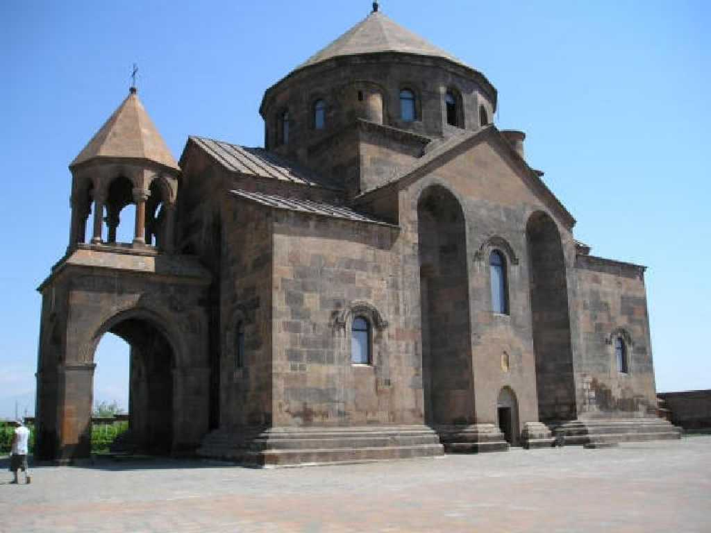

Hripsime Church
３世紀後半ローマにリプシマという美しい尼僧がいてローマ帝国ディオクレティアヌス皇帝がリプシマに言い寄ったが彼女は拒絶しアルメニア国王の差し向けた追っ手に惨殺された 罪の報いで重い奇病にかかったアルメニア国王は先にキリスト教に改宗していた妹の忠告で１５年間牢につながれていた聖グレゴリウスを解放すると病が癒されさらに過去の罪を悔い改めてキリスト教を受け入れ国教とした さらにこの教会を建設し地下墓地に聖リプシマを葬った